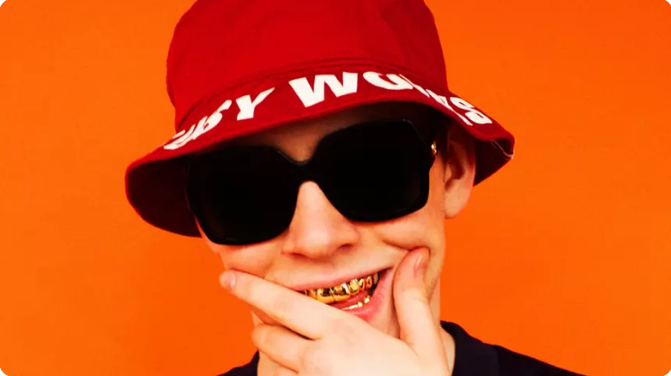

Big Baby Tape родился 5 января 2000 года в Зябликово, на юге Москвы. В 11-м классе парень стал жить с бабушкой, так как родители не верили в мальчика. После школы Big Baby Tape, чье настоящее имя Егор Ракитин, поступил в институт с военной кафедрой.
Big Baby Tape, а точнее, Егор Олегович Ракитин (именно так звучит настоящее имя музыканта), появился на свет 5 января 2000 года на юге Москвы. О детстве артиста почти ничего не известно. После школы он поступил в колледж с военной кафедрой, но довольно быстро отчислился. О получении высшего образования парень даже не думал.
Заинтересоваться музыкой Егора сподвигла старшая сестра. Она познакомила его со своими друзьями, которые плотно увлекались хип-хоп-направлением. Первый рэпер, которого слушал Ракитин, был 50 Cent. Также его вдохновляло творчество Gucci Mane. В возрасте 12 лет исполнитель начал осваивать программу для создания музыки Fruity Loops. Его ориентирами в битмейкинге стали Madlib, DJ Zinc, DJ Rashad, DJ Smokey и DJ Paul. Спустя три года парень взял псевдоним DJ Tape, а чуть позже переименовал себя в Big Baby Tape.
Первые творческие шаги музыкант сделал еще в 2016 году, но все же плотно погрузиться в мир шоу-бизнеса ему помог Feduk. По случайности рэпер наткнулся на микстейпы артиста The Further Adventures Inside The Trap и Cookin' Anthems, после чего познакомился с ним через социальные сети. Он всячески поддерживал его в интервью, предсказывая бешеную популярность. В принципе, слова Федука оказались пророческими.
Естественно, дело не обошлось без совместки. В марте 2018-го парни релизнули совместный сингл Hustle Tales. Тогда же Big Baby Tape выпустил первые два полноформатных альбома на лейбле Warner Music Russia, где приняли участие Boulevard Depo, White Punk, Dope V, I61, Хаски и другие. Пластинки Dragonborn и Hoodrich Tales быстро набрали популярность среди слушателей. В особенности добился успеха трек Gimme the Loot, который занял первое место в музыкальных чартах разных аудиосервисов. Композиция обогнала по прослушиваниям синглы Трэвиса Скотта, Арианы Гранде и Леди Гаги. Хотя изначально исполнитель не предполагал, что его проект так удачно выстрелит.
В 2019-м Ракитин попал в скандал. Флоридский рэпер Leavemealone обвинил российского артиста в плагиате. Припев композиции Weight полностью повторял мелодию трека Face. Big Baby Tape признал ошибку и пообещал ответственнее относиться к созданию музыки.
После случившегося артист не отчаялся и продолжил активно работать над треками. Буквально через два года исполнитель порадовал вторым полноформатным альбомом BANDANA I, записанным совместно с Kizaru. В планах музыканта выпустить сольный релиз и вторую часть «Банданы», а также дать пару концертов в Москве.
Об амурных делах Big Baby Tape ничего не известно. Артист не любит распространяться о личной жизни. Хотя в одном из интервью исполнитель поделился, что посещает психолога. Он посоветовал слушателям обращать внимание на душевные переживания и по возможности ходить к специалисту. Что ж, сразу видно: парень с каждым годом становится более осознанным. Кто знает, может, в будущем в его треках появится смысл. Ну а пока нам остается наслаждаться старыми ритмичными работами талантливого рэпера.